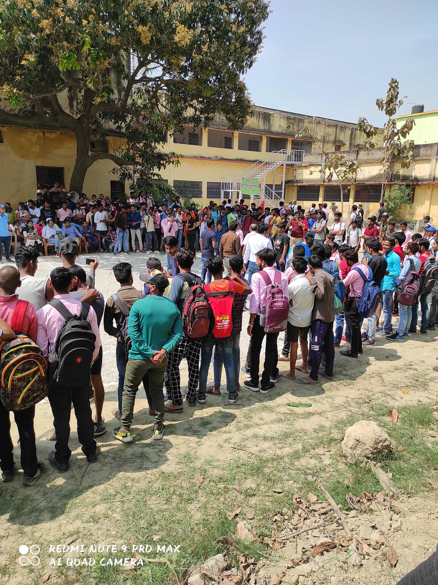

RN COLLEGE

LATEST NEWS
ABOUT COLLEGE
Bihar University(BRABU) University Grant Comm.. Bihar Higher Education Schlorship Bihar Bihar Right To Publics Schlorship Central Govt RTI
Online Public Grievance National Eligibility Test Joint Entrance E..(Main) NAAD SWAYAM e - Pathsala NVSP Webmail Information Brochure- 19-6-2019
National Seminar on 26 & 27 July 2019. Original Certificate List- 13-6-2019 Graduation Accounting & Taxation- 7-6-2019 B.Voc. Application form
Click to Detail List About College... Raj Narain College, Hajipur, which has recently been accredited by the NAAC with high ‘B’ grade , is one
of the premier constituent units of B.R.A. Bihar University , Muzaffarpur. It is the oldest institution of the higher education in the district
of Vaishali which is known for its glory. Vaishali has the distinction of being the birth place of Lord Mahavir and “Karm Kshetra” of Lord Buddha.
It was here that the great “Lichchavis” established a democratic system of governance, which is rightly considered the first example of ‘democracy’
in the world. Amrapali, the rare blend of beauty and art, added to the glory of the magnificent landHajipur, the headquarters of the district of Vaishali,
is situated near the confluence of rivers Ghandak and Ganga. As a matter of fact, Vaishali in general and Hajipur in particular, is the confluence of many
cultures and languages like Bajjika, Maithali, Bhojpuri and Magahi.Raj Narain College, Hajipur was established on 1st .August, 1952.
The chief donor Late Raj Narain Singh donated a considerable amount and took great interest in the development of this college throughout his life .
Dr. Anugrah Narain Singh , the then Finance Minister of Bihar, popularly known as Bare Saheb, not only laid the foundation of the college, but took keen
interest in its all-round development. The great personalities like Sri Dip Narayan Singh,Sri Satyendra Narayan Sinha (Chote Saheb),
Dr. Jagannath Mishra,Smt. Kishori Sinha( Bachchi Jee), Prof. Moinul Haque, Sri Hari Kishore Singh, Sri Rajeshwar Patel, Sri Haribans Narain Singh,
Sri Prabhu Narain Chaube, Acharya Devendra Nath Sharma and Dr. Y.
Masih have been associated with the college. The College has the distinction of being the only Post Graduate teaching Centre in the district of Vaishali.
Due to great efforts of Smt. Kishori Sinha, Sri Brishen Patel and the then Principal Prof.Hardwar Singh, Sri Lokesh Nath Jha , the then Education Minister
was kind enough to grant P.G. teaching in all the Hons. teaching subjects in the year 1986. But initially P.G. teaching in English, Hindi, Political Science,
Psychology, Mathematics and Botany only could be started by the University in 1986. By the sincere efforts of the then Prof.- in- Charge, Dr. Paramanand Singh ,
the then Vice-Chancellor Prof. Z. Ahmad had been pleased to accord sanction for commencing Postgraduate teaching in six more subjects, viz., Urdu, History,
Philosophy, Economics, Physics, Chemistry, and Zoology in 1992 Since then, specifically during the last decade, when the college became conscious of extending
inclusive and quality education in the true sense,
several innovative measures were taken to achieve the desired goals.
WRITE TO US
The Principal
R.N. College Hajipur
Vaishali, Bihar, India, 844101
Phone:- 09990442436
LOGIN LINKS
Admin Login
IMPORTANT LINKS
Home
Student' Association
Teacher' Association
Gallery
Notice
Contact us
Raj Narain College, Hajipur - All Right Reserved -
DESIGNED & DEVELOPED BY:- AMAN KUMAR
RN COLLEGE BCA (Roll no- 70).